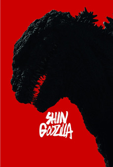

Shin Godzilla
|
Shin Godzilla
|
|
シン・ゴジラ
|
|

|
|
Direção
|
Hideaki Anno
Shinji Higuchi
|
Roteiro
|
Hideaki Anno
|
Elenco
|
Hiroki Hasegawa
Yutaka Takenouchi
Satomi Ishihara
|
Música
|
Shirō Sagisu
|
Cinematografia
|
Kosuke Yamada
|
Distribuição
|
Toho Pictures |
Lançamento
|
25 de julho de 2016
|
Idioma
|
japonês
alemão
|
Orçamento
|
$ 7 milhões de dólares |
Receita
|
US$ 78 milhões de dólares
|
Shin Gojira é um filme japonês de 2016, dos gêneros drama, ação e ficção científica, dirigido por Hideaki Anno (autor do roteiro) e Shinji Higuchi.
Estreou em seu país de origem em 25 de julho de 2016. A obra faz referência ao acidente nuclear de Fukushima I e ao sismo e tsunami de Tohoku de 2011.
Enredo
Enquanto a guarda costeira do Japão inspeciona um iate abandonado na baía de Tóquio, o barco é destruído e a baía é inundada. Depois que um vídeo do incidente se torna viral, o vice-chefe do gabinete, Rando Yaguchi, teoriza que tudo foi causado por uma criatura viva. Sua teoria se confirma quando noticiários flagram uma enorme cauda emergir do oceano. O primeiro-ministro assegura que a criatura é incapaz de vir à terra firme devido a seu peso, no entanto, o monstro se move através de canais intra municipais e consegue rastejar cidade adentro, deixando um rastro de destruição e inúmeras vítimas. Ele evolui para uma forma bípede de cor avermelhada e retorna ao mar.
Os funcionários do governo se concentram na estratégia militar enquanto Rando se encarrega de uma força-tarefa para pesquisar a criatura. Devido as altas leituras de radiação, é teorizado que o monstro é energizado por fissão nuclear. O presidente dos EUA envia uma agente especial, Kayoko Ann Patterson, que se revela uma zoologista e antinuclear. Goro Maki estava estudando mutações causadas por radiação e teorizou a aparência da criatura, mas não recebe atenção dos cientistas estadunidenses e japoneses, sendo proibido de publicar suas conclusões. O iate abandonado na baía de Tóquio o pertencia, tendo deixado suas anotações de pesquisa criptografadas antes de desaparecer.
O monstro, agora chamado de Godzilla, reaparece com o dobro do tamanho original perto de Kamakura, indo em direção à Tóquio. As forças de autodefesa se mobilizam mas não surtem efeito, sendo forçados a se retirarem quando a defesa é rompida. Os EUA intervém com um ataque massivo e destrutivo, o que leva a evacuação de civis e funcionários do governo. Bombardeiros B-2 atacam Godzilla com bombas GBU-57. O monstro retribui com raios de energia concentrada disparados de sua boca, cauda e barbatanas dorsais, destruindo o helicóptero que levava os altos funcionários do governo e os B-2, além de grande parte de Tóquio. Após esgotar sua energia, Godzilla entra em estado de dormência e fica imóvel.
A equipe de Yaguchi descobre que sangue de Godzilla age como um sistema de resfriamento e que poderiam usar um agente coagulante para congelá-lo. Depois de analisar amostras de tecido, é descoberto que Godzilla é um ser em constante evolução, sendo capaz de se reproduzir assexuadamente. A ONU adverte que caso o Japão não elimine Godzilla em um prazo de poucos dias, será usado de armas termonucleares para subjugá-lo. Várias prefeitura ordenam evacuação em resposta ao iminente ataque. Recusando ver bombas serem novamente detonadas em seu país, Patterson usa de suas conexões políticas para ganhar mais tempo para a equipe de Yaguchi. É feito um avanço quando as anotações de Goro finalmente são decifradas, procurando meios para realizar o plano com apoio internacional.
Poucas horas antes do ataque nuclear, o governo japonês aprova o plano. Godzilla é provocado por drones americanos, usando de sua energia. Trens e edifícios carregados de explosivos são dirigidos e derrubados contra ele, derrubando-o e permitindo aos caminhões injetarem o coagulante na boca de Godzilla. Embora muitos sejam mortos, o plano é um sucesso e o monstro congela. No rescaldo, descobre-se que o estado de congelamento tem uma semivida curta e que Tóquio pode ser reconstruída em breve. A comunidade internacional concorda em cancelar o ataque, mas o novo governo japonês concorda que, caso Godzilla desperte, um ataque nuclear será ordenado imediatamente. Na última cena, a cauda de Godzilla mostra criaturas humanoides congeladas prestes a emergir.